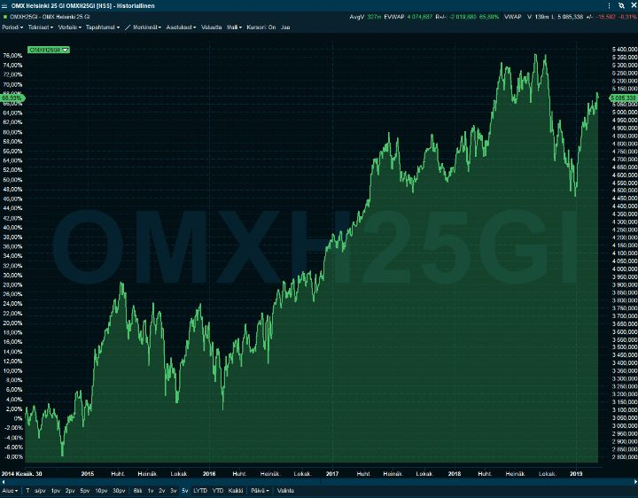

Aika olla taas hieman varovaisempi markkinoilla
Kirjoitin vuodenvaihteessa, että pörssien ei ole pakko romahtaa. Se oli reaktioni niihin kaikkiin lehtijuttuihin ja kirjoituksiin, jossa povattiin lopun aikoja pörssien tullessa rajusti alas. Kehotin käyttämään pessimistien voitonhetket osakkeiden ostamiseen tulevana vuonna. Alekausi pörssissä oli tällä kertaa lyhyempi kuin vaateliikkeissä. Pörssit repivät toistakymmentä prosenttia ylös alle kuukaudessa. Täytyy myöntää, että itsekin jäin osittain asemalla huutelemaan, kun juna jo lähti.
En nähnyt vuodenvaihteessa mitään kovin hälyttävää taloudessa, enkä näe vieläkään. Näyttää kuitenkin siltä, että kaikki maailmantalouden kolme moottoria jolleivat nyt sakkaa vielä, niin ainakin yskähtelevät.
Yhdysvalloissa lyhyen ajan velkasykli on melko pitkällä. Työttömyys on hyvin alhaalla, hintapaineet kasvussa ja velan laatu jatkaa heikkenemistään. Nämä kaikki ovat perinteisiä merkkejä siitä, että talous hidastuu selvästi seuraavien vuosien aikana.
Kiinassa uuden velkaelvytyksen teho heikkenee kerta toisensa jälkeen. Jossain vaiheessa asuntojen rakentaminen tyhjiksi alkaa muistuttaa hölmöläisten peiton jatkamista. Nalle veikkasi aiemmin, ettei Kiinan todellinen kasvuvauhti ole edes neljää prosenttia. Tästä olen täysin samaa mieltä, ja nyt aloitetun elvytyksen jälkeen palataan entistä alhaisempaan kasvuun. Kannattaa muistaa, että ilman Kiinan kertakaikkisen valtavaa velkaelvytystä finanssikriisin jälkeen, taantuma olisi ollut ympäri maailmaa pitempi ja syvempi. Vaatisi aika paljon pokkaa laittaa toinen yhtä massiivinen velkaelvytys päälle velkataakan ollessa jo varsin korkealla.
Euroopassa ei ole auringon alla mitään uutta. Tölkkiä potkitaan eteenpäin viikko toisensa jälkeen. Euroalueen rakenteellisille ongelmille ei tehdä oikein mitään. Sitten on populismin nousu ja Italia. Saksan voittamattomalta tuntuva vientisektorikin on vaikeuksissa.
Mikään näistä kolmen moottorin yskähtelyistä ei ole yksistään huolestuttavaa. Elvytysvaran ollessa kuitenkin historiallisen rajattu, on kaikkien moottorien heikkeneminen samaan aikaan todellinen riski.
Aina on riskejä. Eniten huolestuttavat riskit, joista ei vielä välitetä tai enää jakseta puhua. Ne eivät ole syitä myydä kaikkia osakkeita, vaan syitä olla varovaisempi:
- Yhdysvalloissa valitaan reilun puolentoista vuoden päästä uusi presidentti. On hyvin mahdollista, että Trump saa hyvin vasemmistolaisen vastaehdokkaan. Ensi syksynä tästäkin aletaan huolestua. Melko suuri osa viime vuosien tulosten kasvusta on tullut Yhdysvaltojen alemmasta yritysverotuksesta. Mitä tapahtuukaan, jos seuraava presidentti on Mr. Sanders?
- Trump on ollut hyvä presidentti osakkeille. Hölmöilyt eivät rokota osakkeita, niin kauan kun vaikutukset yritysten talouksiin ovat rajallisia. Heikompi taloudellinen tilanne tai kannatuslukujen laskeminen voivat kuitenkin saada Trumpin painamaan paniikkinappulaa. Siitä tuskin seuraisi mitään hyvää, oli kyse uudesta kauppasodasta tai oikeasta sodasta.
- Kiinan johtoa pidetään kaikkivoipana. Aivan kuin Kiinaan ei voisi tulla ihan oikeata taantumaa, jolloin talous kutistuu. Itse näen sen ihan todellisena riskinä sen jälkeen, kun talouskasvua on pidetty keinotekoisen korkeana velan ja valtavien investointien avulla.
- Jos Eurooppa menee taantumaan lähivuosina, voi populismi nousta aivan uudelle tasolle. Se taas olisi huono asia Euroopan osakkeille. Euron hajoaminen ja omistusoikeuksiin kajoaminen eivät näytä nyt mahdolliselta, mutta joku todennäköisyys niillekin on.
- Kukaan ei näe edes pahaa unta stagflaatiosta. Se on ehkä huonoin tilanne osakkeille. Ei se toki todennäköinen ole. Jos vastaamme populismin paineessa heikkoon talouteen painamalla kiihtyvästi rahaa ja tekemällä huonoja investointeja, on tämäkin skenaario mahdollinen.
Pehmeä lasku on ihan mahdollinen, mutta sitä markkinat jo hinnoittelevat. Vuodenvaihteessa hinnoiteltiin jo melko todennäköisesti koittavaa taantumaa. Itse sijoitan aggressiivisemmin mieluummin odotusten ollessa matalalla kuin korkealla. Vuodenvaihteessa markkinat olivat pessimistiset. Nyt uhat ovat taka-alalla, muttei euforiaakaan ole havaittavissa. Joten sanoisin tunnelman olevan neutraali.
OMXH25-indeksin kuvaaja viimeiseltä viideltä vuodelta:

Pitkäaikaisen sijoittajan ei koskaan kannata haudata päätään kokonaan hiekkaan. Suurimman osan sijoittajista ei kannata yrittää ajoittamista. Niille, jotka sitä haluavat tehdä, kannattaa välttää mustavalkoisuutta. Myymällä kaikki osakkeet, saa aivonsa siihen tilaan, jossa näkee vain negatiivisen maailmassa. Velkavivut tapissa sijoittamalla taas ei näe edes vuoren kokoisia riskejä. Kuitenkin, olemme taas pisteessä, jossa on ehkä hyvä ottaa vähän vähemmän riskiä kuin normaalisti.
Edelleen korot ovat alhaalla ja luultavasti pysyvät siellä. Osakkeet ovat ihan järkevästi hinnoiteltuja suhteessa korkoihin. Ei kannata uskoa tuomiopäivän pasuunoihin. Mutta, jos et ostanut vuodenvaihteessa osakkeita, miksi ostaisit nyt?
On helppo tempaantua optimismiin paremman sentimentin mukana. Ei ole inhottavia negatiivisia uutisia. Mutta voit olla aivan varma, että negatiivinen uutisvirta palaa taas, jos osakkeet lähtevät laskuun.
Mitä itse teemme?
- Suojaamme osakeomistuksia osittain myymällä indeksifutuureita.
- Ostimme kultaa ensimmäistä kertaa ikinä yli 5% salkusta. Vaikkemme ole kultauskovaisia, populismi, hyvin alhaiset reaaliset korot ja pelot villeistä keskuspankeista voivat saada aikaa kullassa uuden nousutrendin.
- Olemme varovaisia osakkeissa ja omaisuuserissä, jotka kärsisivät rajusti taantumassa.
Kannattaa muistaa, että kukaan maailmassa ei saa markkinakäänteitä oikein. Suurin osa asiantuntijoista jopa väittää, ettei siitä ole mahdollista saada mitään etua. Itse sanoisin, että hyvin vaikeaa se on, muttei mahdotonta. Vaikka osaisi ennakoida muutoksen etukäteen, sen ajankohdan arvioiminen on vielä vaikeampaa.
Usein ikävienkin karhumarkkinoiden kohdalla on ollut parempi mennä suurehkolla osakepainolla läpi tyrskyjen kuin myydä kaikki pari vuotta liian aikaisin. Finanssikriisin kaltaiset romahdukset eivät ole ihan normitapauksia, ja toisaalta tarkasti pörssien käännekohdat löytävät vain jälkiviisaat.
Omahan oraakkelin sanoin:
”Ole pelokas, kun muut ovat ahneita, ja ahne, kun muut ovat pelokkaita.”
Disclaimer:
Kolumnit sisältävät mielipiteitä ja mahdollisesti tietoa omista sijoituksistamme, jotka voivat vaihdella päivästä toiseen. Mitään, mitä kirjoitamme ei tule ottaa sijoitussuosituksena. Kuten teksteissämme painotamme, päätökset kannattaa aina tehdä itse. Lukija vastaa itse voitoistaan ja tappioistaan.